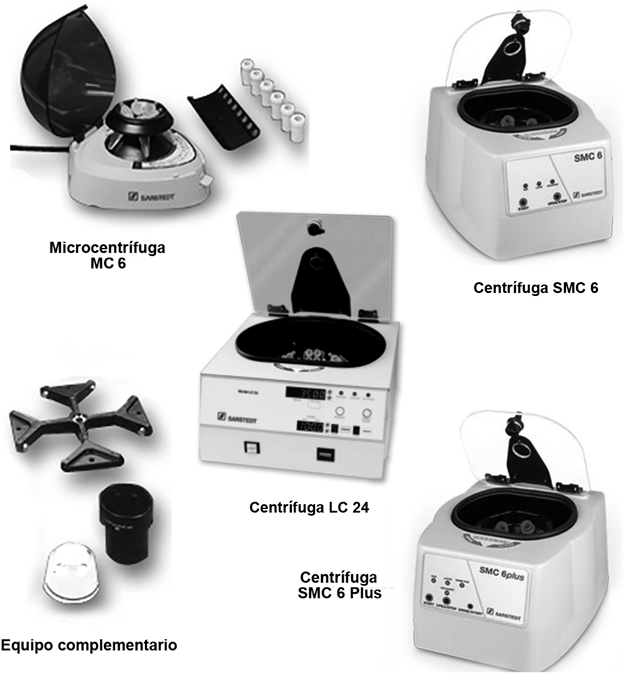
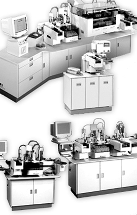

Equipos de analítica y automatización 
Mezcladores
Mezclador por rotación Sarmix® M2000
Mezcla rápida, suave y homogénea, movimiento de inclinación y giro, control de la velocidad de rotación, bandejas reemplazables para diferentes diámetros de tubo.
Mezclador giratorio universal SM 1
Universal y económico, movimiento basculante, guías de apoyo antideslizantes, para tubos de hasta 20 mm x 133 mm.
Mezclador de placas de test TPM 4
Mezclador especial para placas microtest y placas Petri, movimiento horizontal de rotación, control de la velocidad y preselección del tiempo, superficie antideslizante para hasta 4 placas de microtest.
Centrífugas
Microcentrífuga MC 6
Rotor de ángulo fijo de 6 posiciones para tubos de 0.2 a 1.5 ml, rotor de tira para 2 cadenas de 8 unidades, 2,000 x g a 6,000 rpm.
Centrífuga LC 24
115 V, para 24 tubos. Cuenta con 10 programas disponibles. Cuenta con faldones para tubos de 100 mm y 50 ml y faldones con tapa.
Centrífuga SMC 6
115 V, para 6 tubos, con faldones de 100 mm y 75 mm.
Centrífuga SMC 6 Plus
115 V, para 6 tubos, con faldones de 100 mm y 75 mm, además cuenta con programa para segmento urinario.

Equipos Automatizados
Conceptos inteligentes de la fase preanalítica
La capacidad de rendimiento de un laboratorio clínico moderno depende en gran medida de la calidad y eficacia en la preparación de muestras. La automatización de este paso es la clave en laboratorios medianos y grandes para agilizar la rutina, y por lo tanto reducir los tiempos de trabajo. SARSTEDT establece el estándar con sus nuevos diseños. Las características básicas de estos nuevos sistemas son un alto rendimiento, la carga rápida de los equipos y la reducción del tiempo de trabajo proporcionando mayor seguridad y precisión.
Automatización en laboratorios clínicos
Sistema de distribución de muestras PVS
Diseño modular, configuración específica para cada usuario, identificación de muestras y alineamiento correcto del código de barras, destapado de tubos, subdivisión en el módulo de clonación, tubo secundario clónico con código de barras y caracteres de texto legibles, distribución y clasificación según los destinos de trabajo, clasificación de muestras sin errores.

DATOS COMPLEMENTARIOS: Para mayor información comunicarse a:
SARSTEDT MÉXICO S. DE R.L. DE C.V.
Teléfono: (55) 8501-1577
Fax: 8501-1578
e-mail: info.mx@sarstedt.com
y en nuestra página www.sarstedt.com